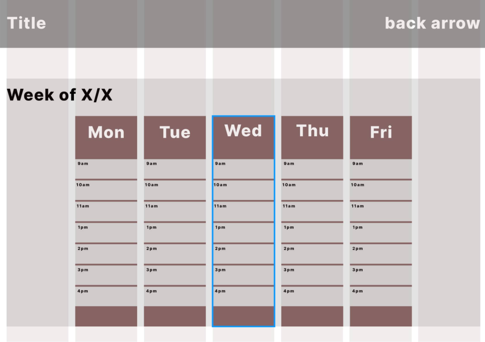

Tools: VS Code, Git, Figma, Eclipse, JUnit, MS Office, MySQL, Jupyter, Overleaf
Hi everyone! I'm currently a junior at Virginia Tech majoring in
Computer Science with a minor in Human-Computer Interaction (HCI), and I have aspirations of
being a software engineer after graduating. Throughout my academic career, I've contributed to
various projects involving data structures, algorithms, data visualization and analysis,
computer organization, UX/UI design, web development, and AI/ML. While my studies are a priority, I still find
time to work out, watch sports, play the guitar, and spend quailty time with family and friends.
For the summer of 2023, I will gain vaulable experience in AI/ML and
app development as a Computer Science Intern for Ora. Ora is a
tight-knit, fast-paced Virginia Tech startup looking to create a social fitness app that
delivers AI-driven workout routines, nutrition plans, and other fitness recommendations to its users.
Previously, I was a teaching assistant during the Fall 2022 semester for a Virginia Tech course titled
"Intro. to Programming in Java". This position challenged me to explain
concepts in ways that were easy to understand, organize office hours weekly, provide
useful feedback when grading assignments, and effectively communicate with students and the
professor. Not only did I succeed at these tasks, but I also helped students excel in the class. I even
persuaded some to continue taking programming courses in the future, which overall made the
experience rewarding.
Feel free to download my CV or continue scrolling to find out more about my skills, experience, projects, and
achievements!
Experience
Computer Science Intern
Ora
Start date: May 2023
Incoming Computer Science Intern at Ora for the summer
of 2023!
Teaching Assistant
Virginia Tech
September 2022 - December 2022
Served as a teaching assistant for "Intro. to Programming in Java":
Assisted students with projects and homework related to Java,
object-oriented programming, and other fundamental programming concepts
Held office hours 4-5 days a week, which were available for up to 70 students
Helped the instructor grade students' projects to evaluate their understanding
of course content
Here are some projects I've worked on recently...

UX/UI Design - Helping Virginia Tech Students Relieve Stress and Connect
With Cook Counseling
Collaborated with a group of four to design a web application that
improves mental health services for Virginia Tech students.
"Spaceship Titanic" AI/ML Kaggle Competition
Using Python, I trained a support vector machine (SVM) model to predict transported
passengers with 77.577% accuracy.
If you want to see more of my work, check out my GitHub!